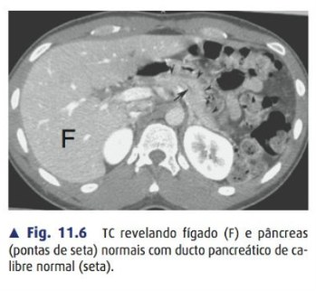

🗺️ Couinaud · 8 segmentos
II·III
Lobo esquerdo lateral
V·VI·VII·VIII
Lobo direito
🧠 maceteSentido horário a partir do caudado, visto de frente 🔄
🩸 Tríade portal
- 🔵 V.porta 70-75% (pouco O₂)
- 🔴 A.hepática 25-30% (alto O₂)
- 🟡 Ducto biliar
alto rendimento HCPA·AMRIGS✋ Pringle clampeia a tríade — mas NÃO controla sangramento de veias hepáticas/cava!

Fig. 11.6 — TC normal: fígado (F) e pâncreas (pontas de seta) com ducto pancreático de calibre normal (seta) — referência antes de entrar nas lesões.
🔵 Hemangioma × HNF × Adenoma
🩸 Hemangioma
+comum · realce centrípeto · sem risco
⭐ HNF
Cicatriz central · sem risco · NÃO suspende ACO
⚠️ Adenoma
ACO/anabolizante · risco sangra+maligniza
alto rendimento🚨 HNF ≠ Adenoma! HNF não precisa suspender ACO. Adenoma sim.
🔪 Quando operar adenoma
- 📏 >5 cm → ressecar
- 👨 Homem → ressecar (qualquer tamanho!)
- 👩 <5cm mulher → suspender hormônio + seguir
🧠 maceteCisto simples = achado banal, expectante. Cuidado c/ hidático (não puncionar sem certeza!) 🐑
🦠 Piogênico × Amebiano
🧫 Piogênico
Múltiplo · via biliar · dreno+ATB
🦠 Amebiano
Único lobo D · jovem viajante · sorologia+ · só metronidazol
🧠 macetePiogênico = múltiplo+biliar+DRENA. Amebiano = único+D+SÓ REMÉDIO 💊
🔪 Quando drenar amebiano (exceção)
- ❓ Dúvida dx piogênico×amebiano
- 💥 Risco de ruptura iminente
- 📉 Falha ao metronidazol em 3-5d
- ⬅️ Lobo esquerdo (risco pericárdio)
- 🤰 Gestante
☠️ pega-ratãoChoque com falência de múltiplos órgãos = contraindica cirurgia → drenar percutâneo e estabilizar.
💧 Baveno VII
alto rendimento📊 CSPH = HVPG ≥10 mmHg · LSM<15+plaquetas>150k → dispensa endoscopia de rastreio
💊 Profilaxia primária
- 🔴 Alto risco → carvedilol OU ligadura
- 🟡 CSPH sem varizes altas → carvedilol previne descompensação (não só sangramento!)
🚨 Sangramento agudo — sequência
1
💧 Estabilizar (transfusão restritiva Hb~7-8)
2
💉 Droga vasoativa (terlipressina/octreotide) JÁ
3
💊 ATB profilático (norfloxacino/ceftriaxone)
4
🔬 EDA em até 12h (ligadura/cianoacrilato)
5
🩺 TIPS precoce se Child C ou B+sangramento ativo
☠️ pega-ratãoVolume excessivo piora pressão portal! Plasma/fator VIIa não são rotina.
🧠 TIPS = 1ª linha seAscite refratária + ≥3 paracenteses/ano 💧
☠️ Pega-ratões
trap 1HNF NÃO suspende ACO — diferente do adenoma ⭐
trap 2Adenoma em homem = operar sempre 👨
trap 3Nódulo em cirrótico = CHC até provar contrário 🧫
trap 4Amebiano típico = só remédio, drenar é exceção 💊
trap 5Pringle NÃO controla veia hepática/cava ✋
trap 6Volume excessivo piora sangramento varicoso 💧
trap 7Plasma/fator VIIa não são rotina (Baveno VII) 🚫
trap 8Fissura umbilical ≠ divisão funcional real 🗺️
✅ resumo de bolsoHemangioma=centrípeto·HNF=cicatriz+sem risco·Adenoma=hormônio+risco·Piogênico=múltiplo+dreno·Amebiano=único+remédio·CSPH=HVPG≥10·Baveno=carvedilol+TIPS 🎓